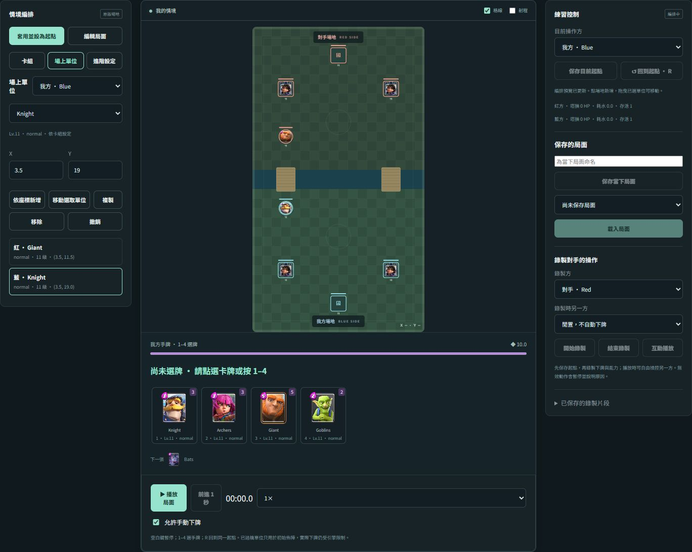

Mars Lin · Software development
From ethnology to software engineering.
I studied ethnology and taught English. Now I'm developing my technical skills and exploring opportunities in this field.
Featured project

Windows practice tool · In development
Perfect Solution (Demo)
I'm building a tool for setting up Clash Royale scenarios, trying different responses, and returning to a saved position. This case follows the working demo and what I'm learning as I refine it.
Graduation project · NCCU
Video Games as a Window into Players' Perceptions of Ethnicity
- Project lead
- September 2025 – January 2026
The department adopted the project and requested permission to use it for departmental evaluations and student recruitment.
As project lead, I coordinated the team, clarified deliverables, and managed the schedule.
What I'm learning
Development screenshots and course exercises.